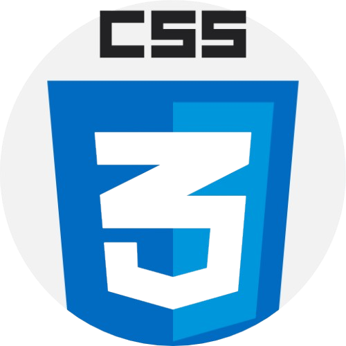

CSS
1. 引入與選取
CSS（Cascading Style Sheets）負責網頁的外觀與樣式，包含顏色、字型、版面排列等，和HTML的分工是「HTML定義內容，CSS定義外觀」。引入CSS有三種方式：外部樣式表（最推薦，用<link rel="stylesheet" href="style.css">引入獨立的.css檔）、內部樣式（在HTML的<head>裡用<style>標籤）、行內樣式（直接在HTML標籤加style屬性，不推薦，難以維護）。
CSS的語法是：選取器 { 屬性: 值; }。「選取器（Selector）」決定要套用樣式的對象，基本選取器有：元素選取器（直接寫標籤名，例如p）、類別選取器（.class名，一個元素可以有多個class，用空格分開）、ID選取器（#id名，一頁只能有一個相同的id）。
進階選取器：後代選取器（A B，選A內所有B）、子代選取器（A > B，只選A的直接子元素B）、相鄰兄弟（A + B）、群組選取器（A, B，同時選A和B）。「偽類（Pseudo-class）」讓你選特定狀態：:hover（滑鼠移過）、:active（點擊時）、:focus（聚焦時）、:nth-child(n)（第n個子元素）。
CSS有「優先權（Specificity）」規則，決定多個樣式衝突時誰優先：ID選取器 > 類別選取器 > 元素選取器；後面的樣式覆蓋前面的（層疊性）；!important強制最高優先權（但盡量少用，會讓樣式難以維護）。
2. 盒模型
CSS的「盒模型（Box Model）」是CSS最核心的概念，每個HTML元素都是一個矩形盒子，由內到外分四層：content（內容，你的文字或圖片）、padding（內距，內容和邊框之間的空間）、border（邊框）、margin（外距，和其他元素之間的空間）。
設定padding和margin都可以用一到四個值：一個值（四邊相同）、兩個值（上下 左右）、三個值（上 左右 下）、四個值（上 右 下 左，順時針）。也可以個別指定：padding-top、margin-left等。border的設定：border: 2px solid red（厚度 樣式 顏色）。
重要！CSS預設的box-sizing是content-box，設定width只算content的寬度，加上padding和border後實際佔用的寬度會更大，讓排版很難預測。建議在CSS開頭加：*, *::before, *::after { box-sizing: border-box; }，這樣width就包含padding和border，直觀得多！
顏色的設定方式有：關鍵字（red、aquamarine）；十六進制（#ff0000，縮寫#f00）；RGB（rgb(255, 0, 0)）；RGBA（rgba(255, 0, 0, 0.5)，第四個值是透明度0-1）；HSL（hsl(色相, 飽和度%, 亮度%)）。字型大小常用px（像素）、rem（相對於根元素字型大小，推薦）、em（相對於父元素字型大小）。
3. 定位與顯示
CSS的display屬性控制元素的顯示模式：block（區塊，獨占一行）、inline（行內，不能設寬高）、inline-block（行內但可設寬高）、none（隱藏，不佔空間）、flex和grid（後面會詳說）。visibility: hidden也是隱藏，但還是佔著空間，和display: none不同。
CSS的「定位（Position）」控制元素怎麼放：static（預設，按照文件流排列）；relative（相對定位，相對自己原本位置偏移，其他元素不受影響）；absolute（絕對定位，相對於最近的非static父元素定位，脫離文件流）；fixed（固定在視窗，捲動頁面也不動）；sticky（滾到指定位置後固定住，常用來做固定navbar）。
定位後用top、right、bottom、left設定偏移量。z-index控制元素的堆疊順序，數字越大越在上面，只對非static定位的元素有效。
讓元素完全置中是CSS的經典難題，現代最簡單的方式：對父元素設 display: flex; justify-content: center; align-items: center;，子元素就會水平垂直置中，這個技巧幾乎每個CSS開發者都會用到！
4. 排版系統
「Flexbox（彈性盒子）」是目前最常用的一維排版系統，在父元素設display: flex後，子元素就會自動沿主軸排列。關鍵屬性：flex-direction設定主軸方向（row水平、column垂直）；justify-content控制主軸對齊（flex-start、center、space-between、space-around）；align-items控制交叉軸對齊（stretch、center、flex-start）。
子元素也有Flexbox屬性：flex: 1讓元素平均分配剩餘空間；flex-shrink: 0防止元素被壓縮；align-self覆蓋父元素的align-items，單獨設定這個子元素的對齊方式；order改變元素的排列順序（預設都是0）。
「Grid（網格）」是二維排版系統，可以同時控制行和列，適合整頁的版面配置。在父元素設display: grid，然後用grid-template-columns定義欄的寬度，例如：grid-template-columns: 1fr 1fr 1fr（三欄均分，fr是fraction的縮寫）；gap設定格子間的間距；子元素用grid-column和grid-row指定佔哪些格子。
Flexbox適合一維（導覽列、卡片列表），Grid適合二維（整頁layout），實務上常兩者混用——Grid做外層大版面，Flexbox做內部元件排列。這兩個系統是現代CSS排版的核心，一定要熟練！
5. 響應式與動畫
「響應式設計（Responsive Design）」讓網頁在不同螢幕尺寸（手機、平板、桌機）都能良好顯示。核心工具是Media Query，根據螢幕寬度套用不同樣式：@media (max-width: 768px) { ... } 表示螢幕寬度在768px以下時套用這裡面的樣式，可以在手機上把多欄變成單欄、調整字型大小等。
響應式設計的最佳實踐是Mobile First：先寫手機版樣式，再用min-width的Media Query逐步擴展到大螢幕，這樣程式碼更精簡。常見斷點（Breakpoints）：小手機<480px、手機<768px、平板<1024px、桌機以上。字型大小建議用rem，讓使用者可以透過瀏覽器設定調整基礎字型大小。
CSS的「過渡（Transition）」讓樣式的改變有動畫效果：transition: all 0.3s ease，表示所有屬性在0.3秒內平滑過渡，常用在hover效果。可以指定特定屬性：transition: background-color 0.3s, transform 0.5s，也可以指定緩動函式（ease、linear、ease-in-out）。
「動畫（Animation）」比transition更強大，用@keyframes定義關鍵影格，再用animation屬性套用：@keyframes fadeIn { from { opacity: 0; } to { opacity: 1; } } 定義淡入效果，元素加上 animation: fadeIn 1s ease 即可。transform屬性可以做位移（translate）、旋轉（rotate）、縮放（scale）等幾何變換，搭配transition和animation可以做出各種精緻效果。
恭喜完成CSS基礎！CSS是越用越有感的技術，建議多複製喜歡的網站設計來拆解模仿，打開瀏覽器開發者工具直接改樣式看效果，是進步最快的方式。CSS好，網頁就好看，加油！🎨
📄 最後這裡提供一個用GoogleAI(Gemini)NotebookLM製作的教學綱要簡報簡報，下載起來，方便需要時做迅速的統整和複習~
立即下載檔案